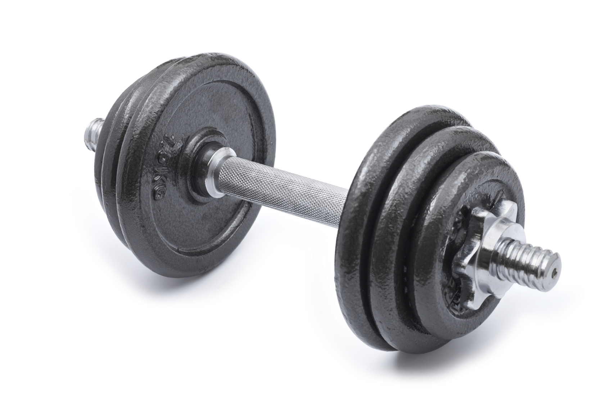
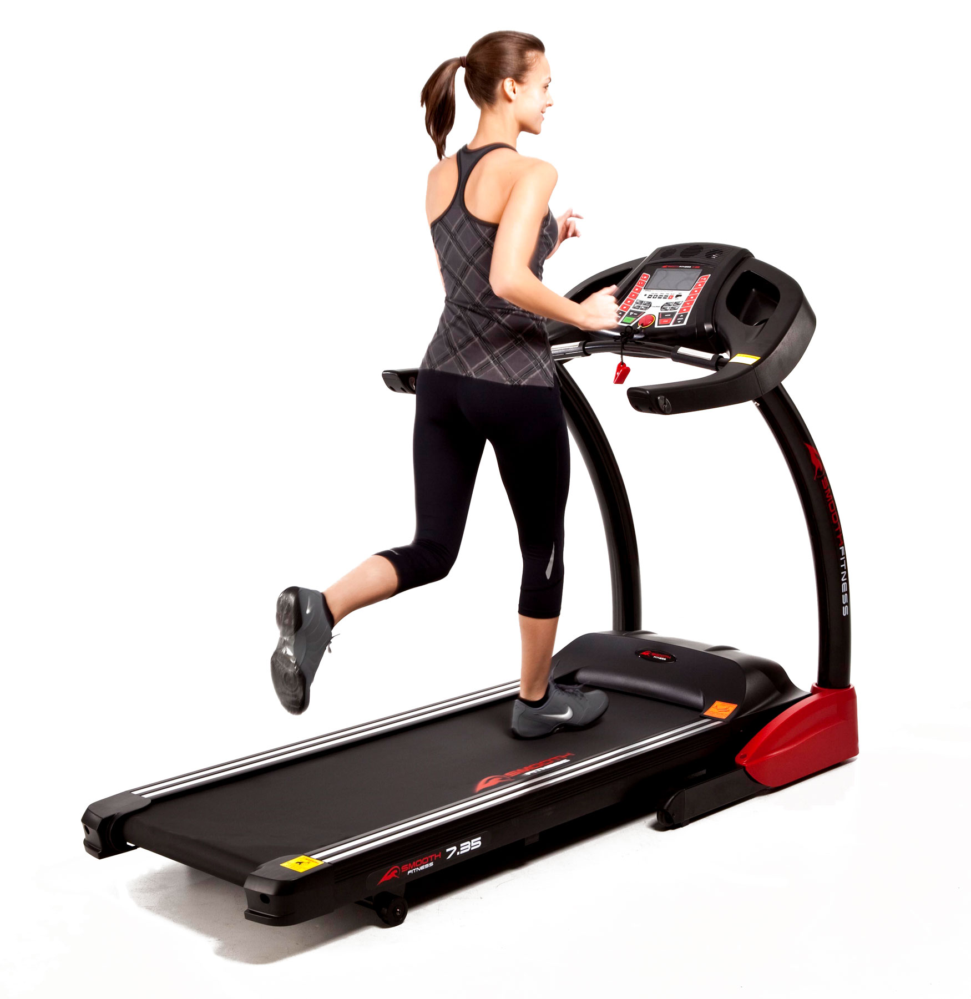
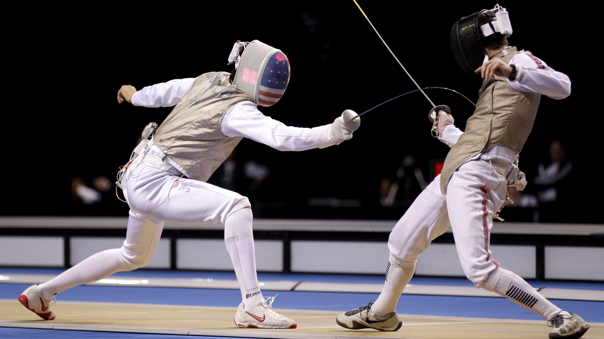
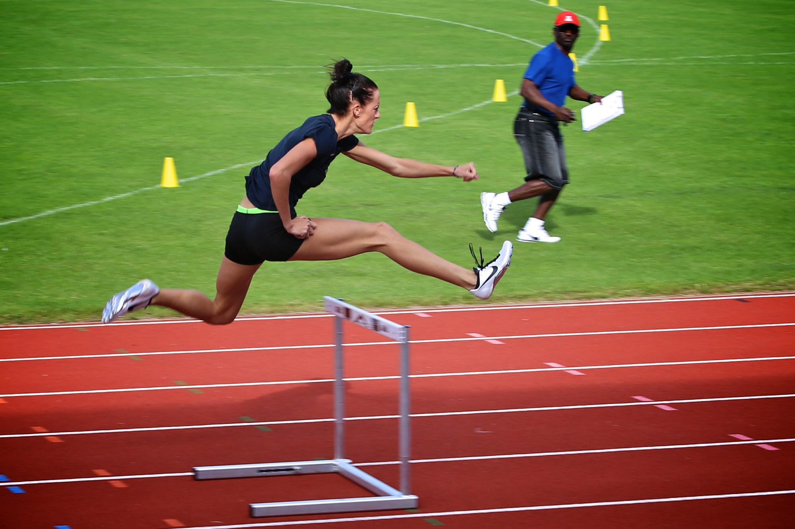
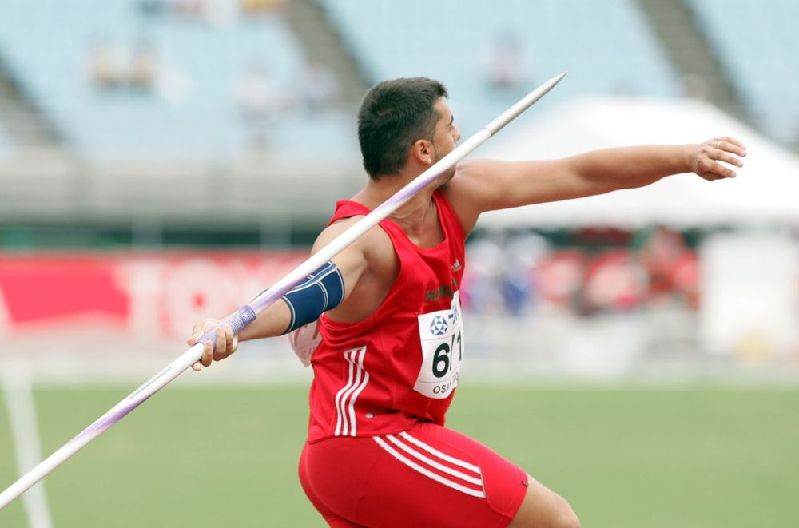
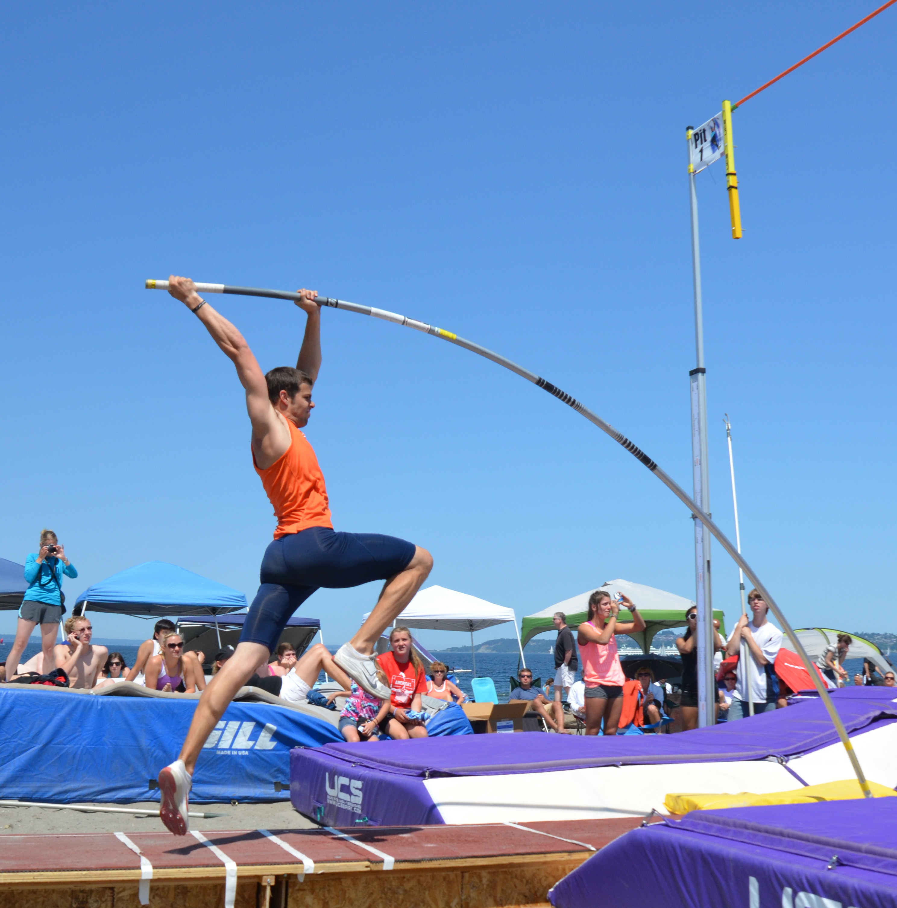
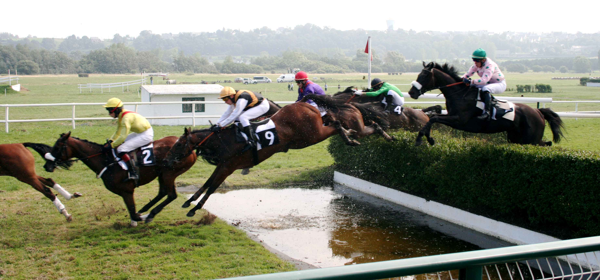

IELTS Speaking Vocabulary. Sport
On this page you can find essential IELTS speaking vocabulary for Sport topic. As you know, Speaking test score makes 25% of your IELTS score. By learning this vocabulary and using it to answer various questions about sport on IELTS Speaking test, you will achieve a high score.
Hint: to enlarge the image, move a cursor over it or touch it.
See IELTS Speaking sample about Sport >
- active rest: a leisure time during which you exercise. Active rest between lessons helps children to study more effectively.
- athletics track (running track): a track for running, usually used for athletic races. The 9-lane running track is equipped to cope with competitions of all levels.
- barbell: a weight-lifting gear. 
- blow the competition away: win easily the competition. After training for seven years, he blew the baseball competition away.
- brisk walk (brisk walking): a sport in which people walk fast, but not as fast as a full run. Brisk walking is a great exercise for those, who want to lose weight.
- to build muscle: to gain muscle mass. John was very skinny five year ago, but now he has built muscle and looks really strong.
- fitness program: a timetable of activities to keep you in a good shape.
- football fan: someone who adores football.
- football pitch: the surface on which you play football.
- football season: a period when football is played.
- jogging: a form of running at a slow pace.
- keep-fit exercises: exercises that help you to keep your body in a good shape.
- personal best: an achievement in sport that is better than anything you have achieved before. Today I've ran 100m in 12 seconds! That is my personal best.
- personal trainer (sports coach): a person that helps you to train on a one-to-one basis. It's much easier to train with a sports coach than alone.
- sports centre (fitness centre): a specific building where people can do different sports. I practise fencing at a local sports centre.
- sports facilities: the equipment and services needed to do a sport. I chose this gym because it offers a wide range of sports facilities.
- sports meeting (athletics meeting): an event at which a number of athletic contests are held. The next athletics meeting will be held in November and will include javelin, pole vault, hurdles and steeplechase.
- squash/tennis/badminton court: the surface where you play these sports.
- strength-training strategy: set of exercises to build muscles. My dad advised me a wonderful strength-training strategy.
- strenuous exercise: exercise that needs a lot of physical effort. It is recommended to drink a lot of water after strenuous exercises.
- strong swimmer: an experienced swimmer.
- swimming pool: a place filled with water made specifically for swimming.
- that's the way the ball bounces: used to say that things don't always go as planned, but there is nothing we can do about it. Dave didn't win the game as he expected, but he never minds - that's the way the ball bounces.
- to be keen to do smth (to be keen on doing smth): to be very interested in doing something. I'm keen on cycling.
- to be out of condition (to be out of shape): to be in bad physical condition, to lose strength. Lily hasn't been training for years, she is out of condition now.
- to be saved by the bell: to be saved from losing by a timely interruption.Evan would lose this round, if he wasn't saved by the bell.
- to build muscle: to gain muscle by working out.
- to get into shape: to become fit. Paul started training in gym because he wanted to get into shape.
- to keep fit: to stay in a good shape. I practise dancing to keep fit.
- to run the marathon: to run a distance of 42.195 kilometres.
- to set a record: to achieve the best result in a sport. A new record in pole vault was set two years ago.
- to take up doing smth: to start doing something new (usually sport). I took up dancing last week.
- to train hard: to train with effort and passion.
- to warm up: to perform light exercises to prepare for a hard workout. A good warm-up readies your body for a hard training.
- to work out: to exercise in gym.
- treadmill: an exercise machine in the gym used for walking or running, while staying in the same place. Good treadmills provide a indoor workout experience as natural as the outdoors. 
- trial-and-error method: a method of reaching a solution by trying various means until you succeed. I learned swimming by trial-and-error method, trying different moves until I figured out how to float on water.
- workout : session of exercises in gym. You can do a workout for chest, for legs, for losing weight etc. My trainer suggested me a workout for abdominal muscles.
Some interesting sports:
- fencing: a sport in which people use spit or saber in attack and defense. 
- hurdles: a race in which runners must jump over a series of barriers. 
- javelin: a sport where a metal or metal-tipped spear is thrown for distance. 
- pole vault: a sport in which a person uses a long, flexible pole to jump. 
- steeplechase: a race in which people riding horses jump over fences, water, etc. 